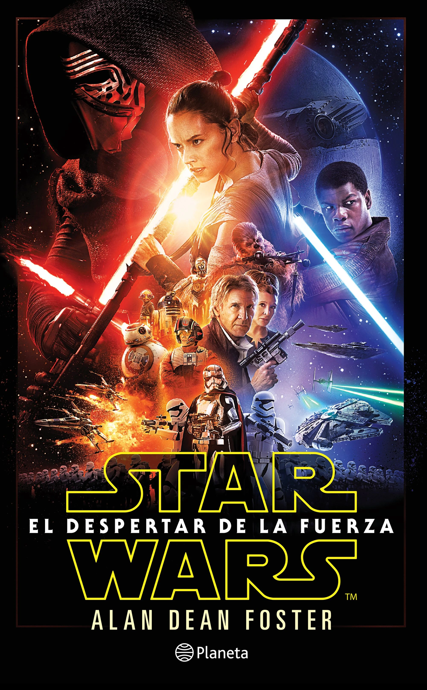

Genres
Amplio género de literatura, cine, televisión y videojuegos, que incluye numerosos y frecuentemente solapados subgéneros, cuyo objetivo principal es mantener al lector a la expectativa, generalmente en un estado de tensión, de lo que pueda ocurrirles a los personajes y, por lo tanto, atento al desarrollo del onflicto o nudo de la narración.

La principal característica de este género es tener una trama que haga que el espectador esté en constante suspenso, que le genere la necesidad de finalizar la historia y que mantenga la ansiedad, la emoción y la incertidumbre hasta la resolución del tema.

Una película infantil es una película destinada a un público de corta edad, adaptada a sus intereses y a su nivel de comprensión.

El llamado cine de acción es un género cinematográfico donde prima la espectacularidad de las imágenes por medio de efectos especiales de estilo "clásico". La denominación es más un convencionalismo popular, que un género cinematográfico puro acuñado por críticos, estudiosos o cineastas.
